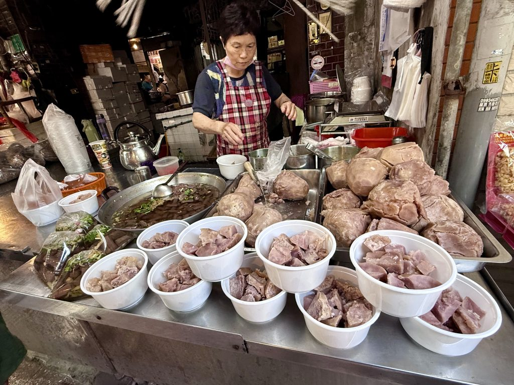
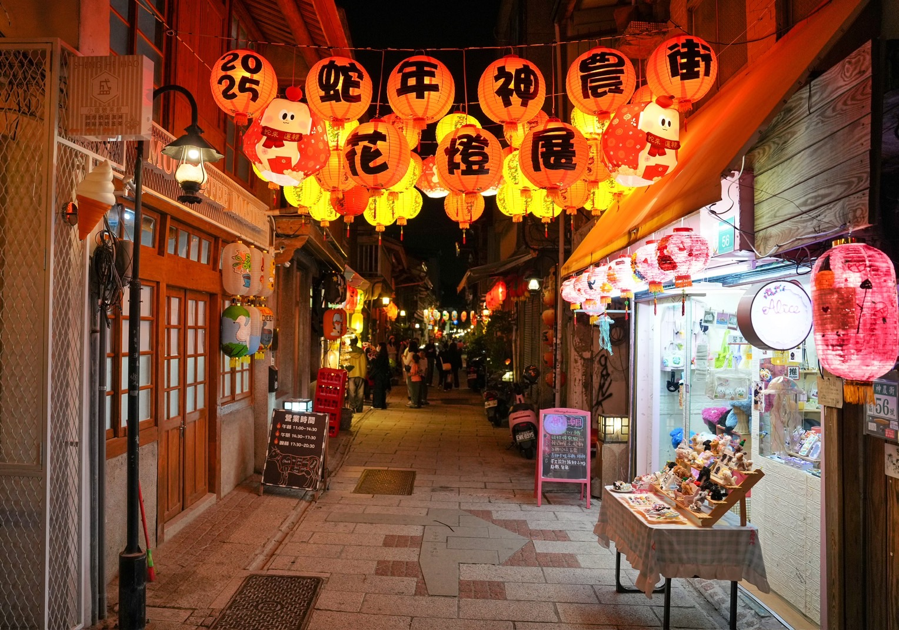
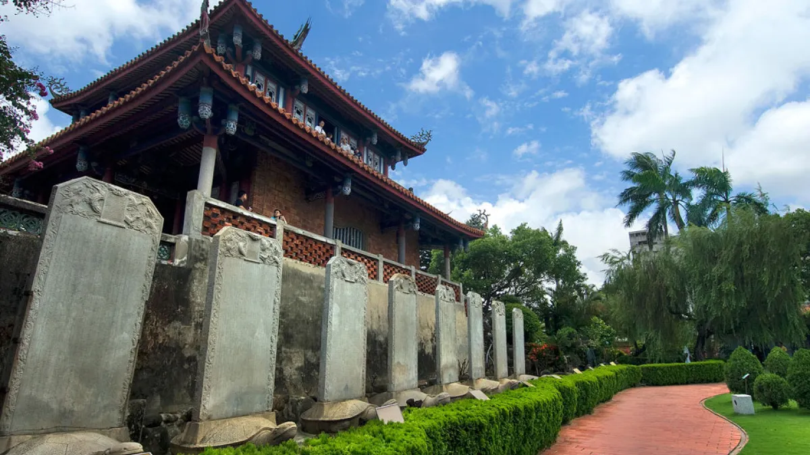
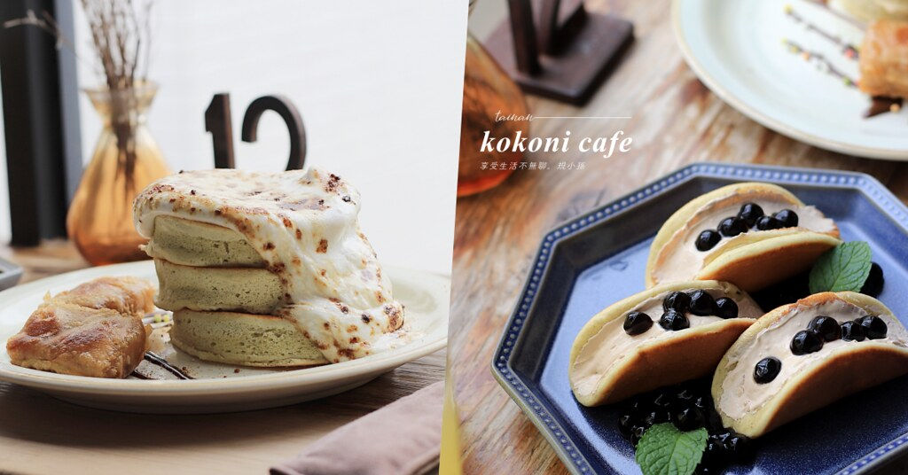
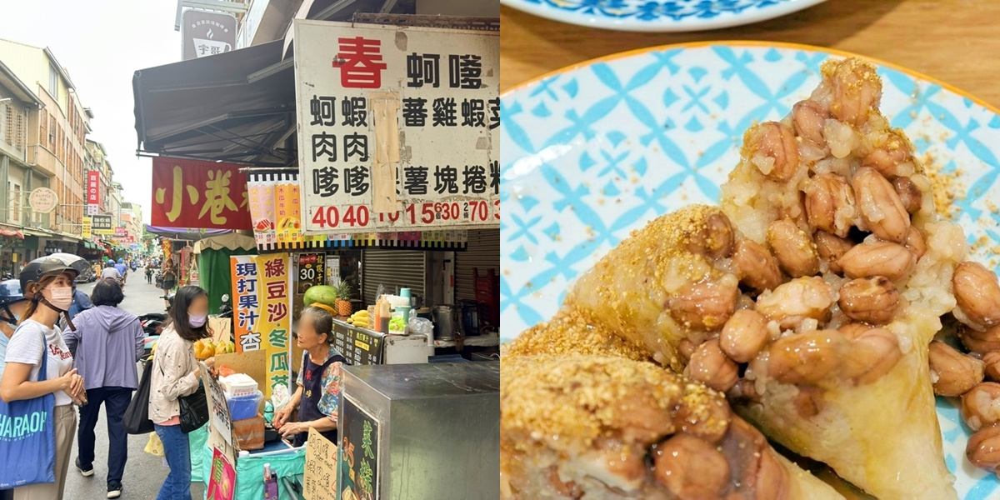
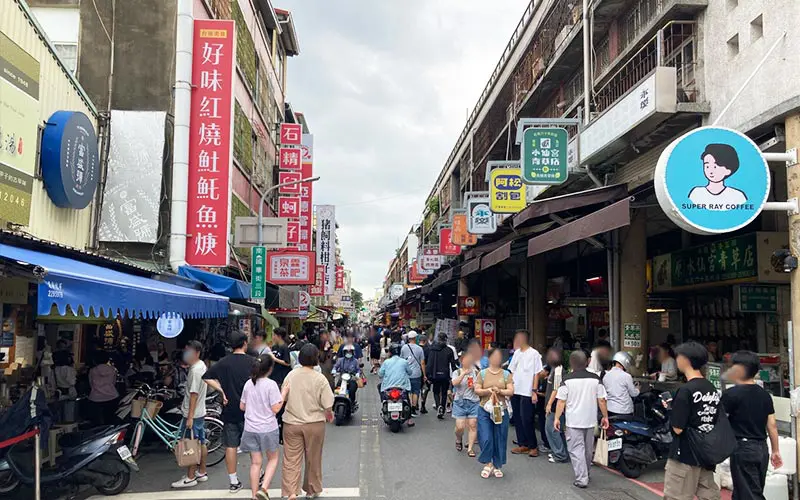

府城時光消息
探索台南最新動態、巷弄故事與文化活動

台南歷史悠久的水仙宮市場內，藏著一家傳承數十年的蜜芋頭老店。店家堅持選用在地芋頭以慢火細細蜜製，打造出鬆軟不爛、甜而不膩的絕佳口感。這碗充滿手工溫度的古早味甜品，不僅承載了在地人從小吃到大的飲食記憶，近年更隨著台南美食觀光升溫，成為吸引無數外地觀光客深入體驗台南庶民文化與市場人情味的重要窗口。

緊鄰台南國華街的神農街（舊名北勢街），是目前台南保存最完善的清代老街。白天，飽經風霜的木造狹長街屋化身為特色咖啡館與文創工作室，散發內斂的文青氣息；入夜後，兩側古建築陸續點亮各式復古紅燈籠，將整條街營造出浪漫又神祕的復古氛圍。這條融合歷史、藝術與街廟文化的 300 年古老巷弄，正以其獨特的日夜雙重魅力，吸引無數旅人前來放慢腳步，細細品味台南特有的庶民歷史長河。

台南指標性古蹟赤崁樓耗時多年的修復工程正式完工，並在春節與連假期間魅力大爆發，3 天內狂吸超過 1.6 萬人次造訪。全新活化的赤崁樓推出超沉浸的「熱蘭遮市集」，讓民眾能換取仿古貨幣體驗荷蘭商人的日常，夜間更有扮演清代知府「蔣元樞」的演員現身說書、帶領遊客解謎，將歷史建築轉化為大型實境舞台。無論是精緻的夜間燈飾還是深度文化互動，都讓這座融合荷式遺蹟與清領風格的府城地標，展現出兼具質感與潮流的全新玩法。

餐廳由幾十年的台南老房子改建而成，保留了古老的大門、復古的磨石子地磚、大面窗格，並擺設了古老磅秤和大掛鐘等老件，營造出充滿時間沉澱的「生活感」。二樓採光極佳，且店內每個座位皆貼心配置了獨立插座。

春蚵嗲是台南國華街人氣美食之一，春蚵嗲就位於永樂市場外、國華三街上，春蚵嗲攤位緊鄰一品味碗粿、阿松割包。這間春蚵嗲專賣炸蚵嗲、炸物，深受在地人和觀光客喜愛，不過除了炸物，春蚵嗲自家包的粽子只有懂得內行人才知道也好吃，菜粽$35、肉粽$45，個人大推菜粽有夠大顆，撥開滿滿爆量的花生溢出，愛吃菜粽的就懂，這CP值太強啦~~

來到台南要到哪裡吃美食？當然就是國華街！對於台南人來說，這些沒有花俏招牌的街頭小攤販就是生活中不可或缺的一部分，比起正襟危坐的高級餐廳，來到台南邊走邊吃更能貼近當地生活，今天就為大家整理出台南小吃最大集散地「國華街」必吃美食20選，下次來台南玩時記得不要錯過了呦！